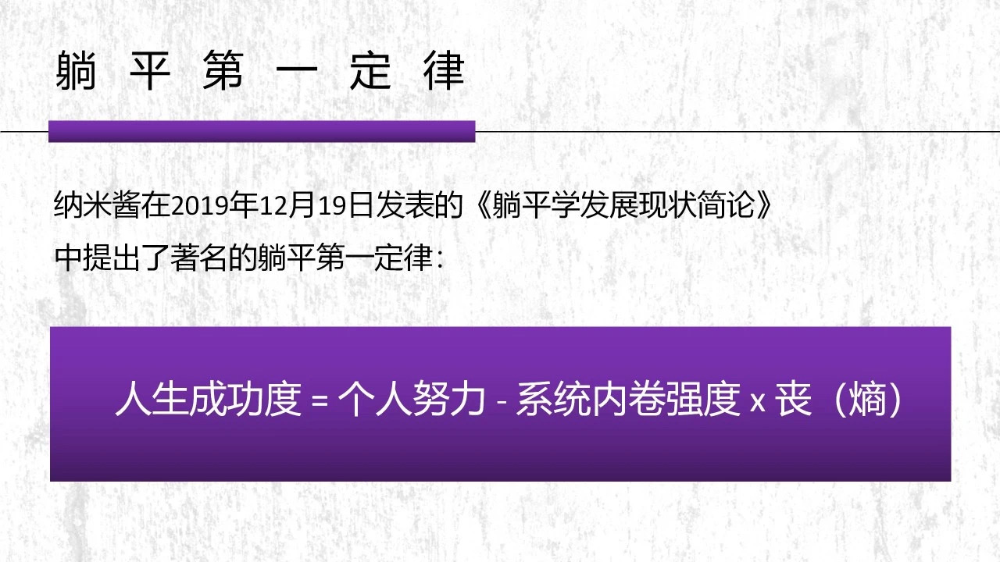

回到主页
行为大赏
风险提示
获奖感言
躺 平 学 研 究 及 主 要 学 派

躺平原教旨主义学派
2019年4月,纳米酱起草并发表了《关于躺平学的初步纲领和躺一大宣言》。
提出:一个目的,两个不准，三个步骤：
一个目的:躺平思考
两个不准:不准攻击成功人士,不准嘲讽弱小人士
三个步骤:躺平,坐着，站立
Footer Banner Section
回到主页
©2021-
Tang Ping Forever